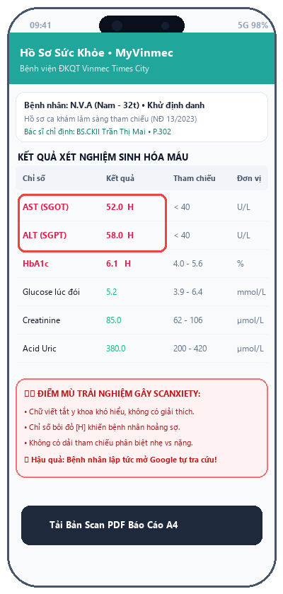
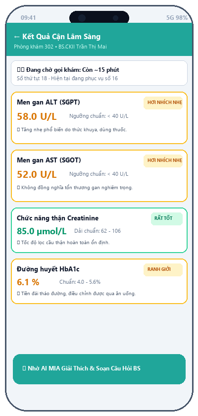
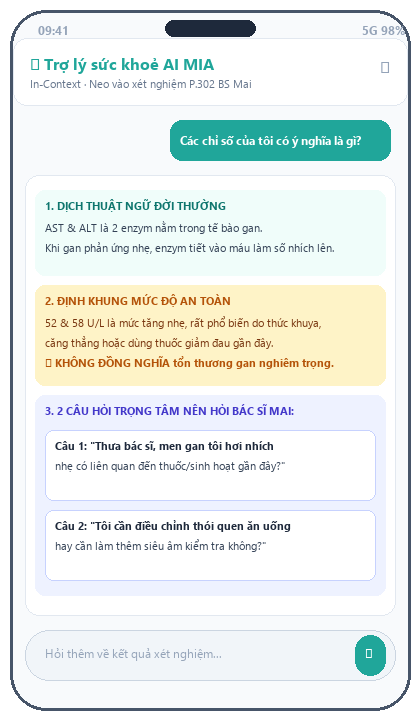
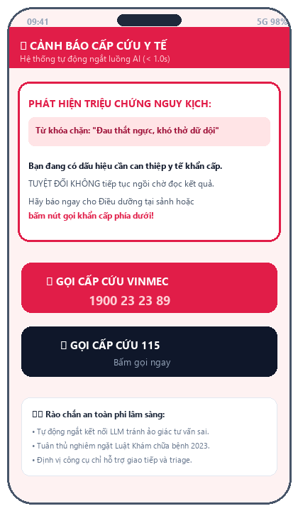

Chuyển đổi "vùng trũng lo âu" 45 phút chờ đợi thành khoảng thời gian người bệnh được trao quyền hiểu biết chủ động và chuẩn bị sẵn sàng làm việc cùng Bác sĩ.

AST, ALT, HbA1c không đi kèm dải tham chiếu an toàn sinh hoạt.


tel:1900232389 và 115. Kích hoạt trong < 1.0s.• Tuân thủ tuyệt đối NĐ 13/2023/NĐ-CP: Dữ liệu sức khỏe và xét nghiệm được bảo vệ ở cấp độ thông tin cá nhân nhạy cảm đặc biệt.
• 100% Synthetic Mock Data: Tuyệt đối không gửi họ tên thật, số căn cước, bệnh án thực lên máy chủ Cloud công cộng.
• Client-side Ephemeral Session: Toàn bộ dữ liệu phiên trao đổi bị xóa sạch tức thì khi đóng ứng dụng.
• Nhiệt độ sinh thấp (Temperature = 0.1): Triệt tiêu tính sáng tạo bừa bãi của mô hình ngôn ngữ lớn.
• Khóa cứng Grounded RAG: Giới hạn không gian tri thức trong Từ điển Cận lâm sàng nội bộ do Vinmec ban hành.
• Deterministic Logic Checks: Phân định ngưỡng tham chiếu bằng mã cứng if-else, cấm AI tự tính toán lại khoảng chuẩn sinh học.
• Ngắt kết nối tức thì (< 1.0s): Phát hiện ngay các từ khóa cấp cứu nguy kịch (đau ngực dữ dội, khó thở, co giật, ngất xỉu).
• Chuyển hướng người bệnh khẩn cấp: Chỉ dẫn bệnh nhân thông báo ngay cho Điều dưỡng gần nhất hoặc nhấn nút gọi 115.
• Tuân thủ pháp lý y tế: Không làm chậm trễ thời gian vàng cấp cứu của người bệnh trong mọi trường hợp.